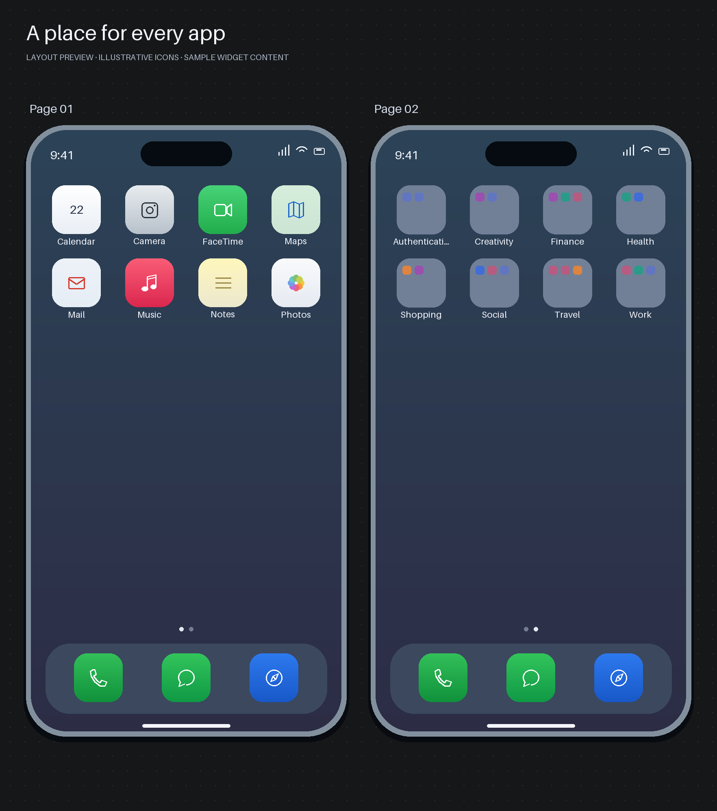

09 / Software · Device workflows
iOS Organizer
A local workflow that turns an iPhone app inventory into a reviewed Home Screen layout, with previews and backups before changes are applied.

The workflow
The user describes how they want their apps organized. A coding agent operates the local CLI to inventory the device, prepare a layout, and show the proposed folder structure and visual preview.
Review before applying
The implementation supports layout backup, offline validation, preview generation, approved writes, and read-back verification. These steps make the proposed change inspectable before it reaches the device.
Compatibility
This is an early release exercised on a limited device and iOS configuration. Exact spacing and widget changes can require a separate mirroring or manual workflow; universal automatic layout compatibility is not assumed.